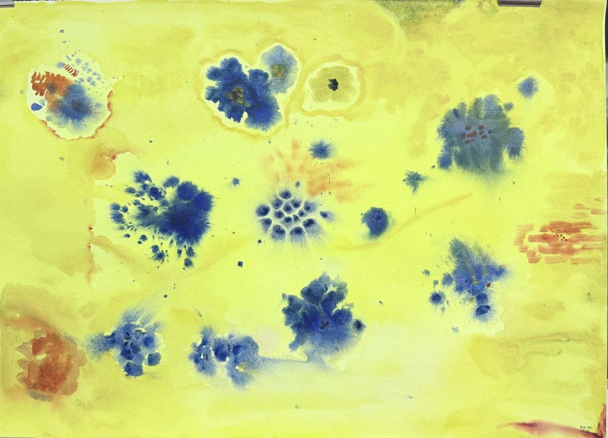

Within the Outside
局外之内

- Artwork ID / 作品编号
- KW-W-000019
- Year / 年份
- 2026
- Medium / 媒介
- Watercolor on paper / 纸本水彩
- Dimensions / 尺寸
- 79 × 109 cm (H × W / 高 × 宽)
About the work / 作品介绍
Different forms emerge, gather and drift within a shared field. They retain distance from one another, yet none can fully withdraw from the environment that contains them. The work reflects on the desire to remain outside: even silence, distance and observation still take place within a common world.
不同的形态在同一片明亮场域中各自发生、聚集、漂移，彼此保持着距离，却又无法真正脱离共同环境。作品回应“局外人”式的存在困境：人可以选择疏离、沉默或旁观，却不存在一个绝对置身事外的位置。每一个存在都可以拥有自己的轨迹，但始终身处世界之内。